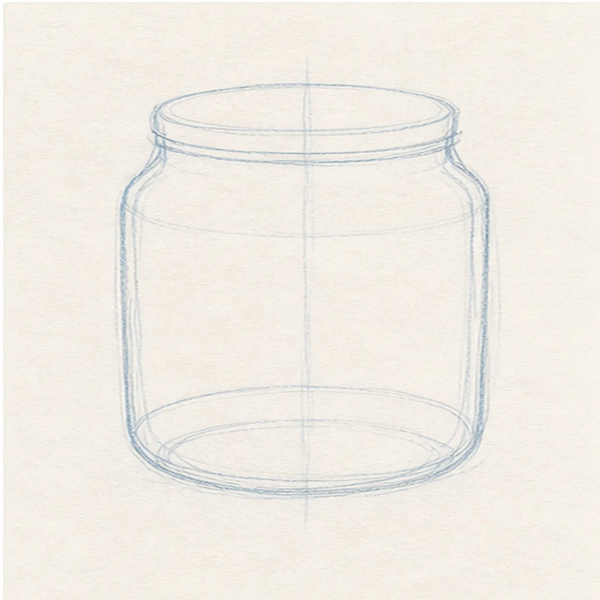
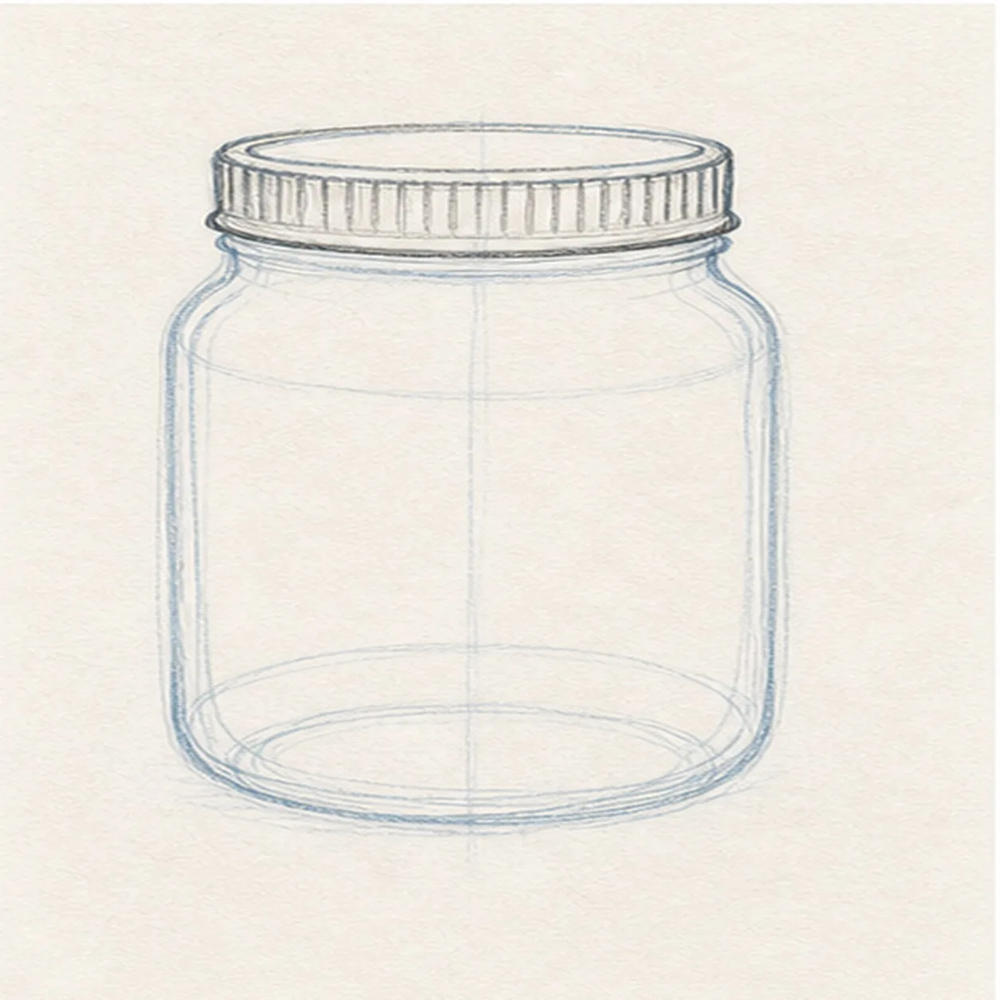
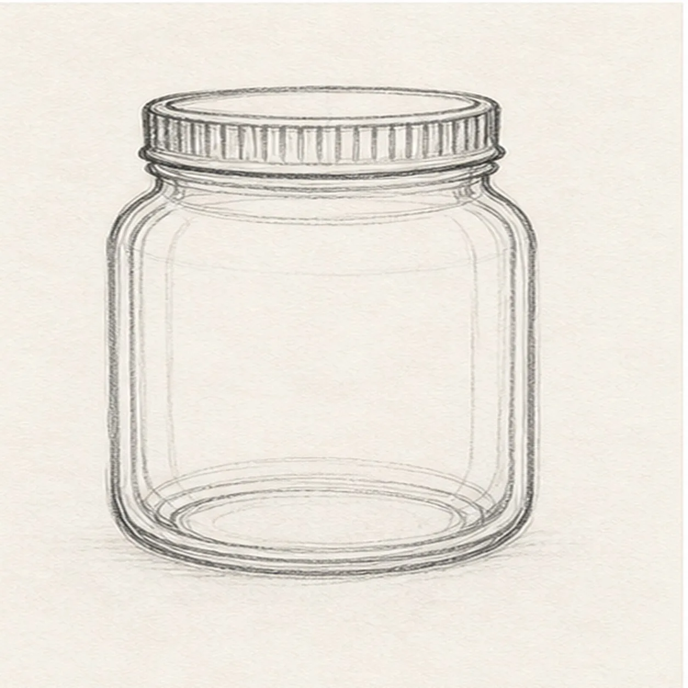
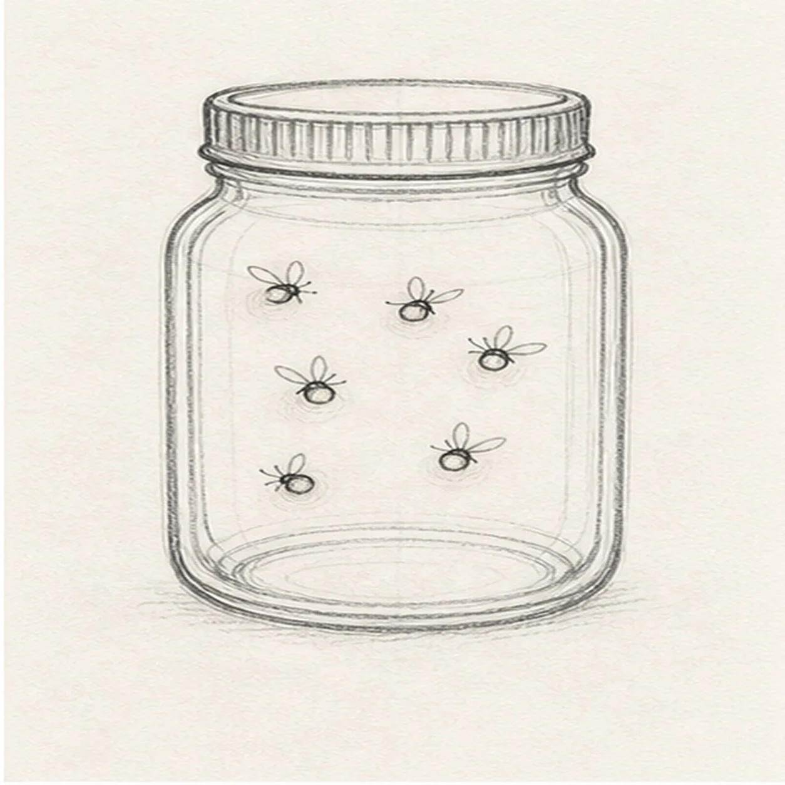
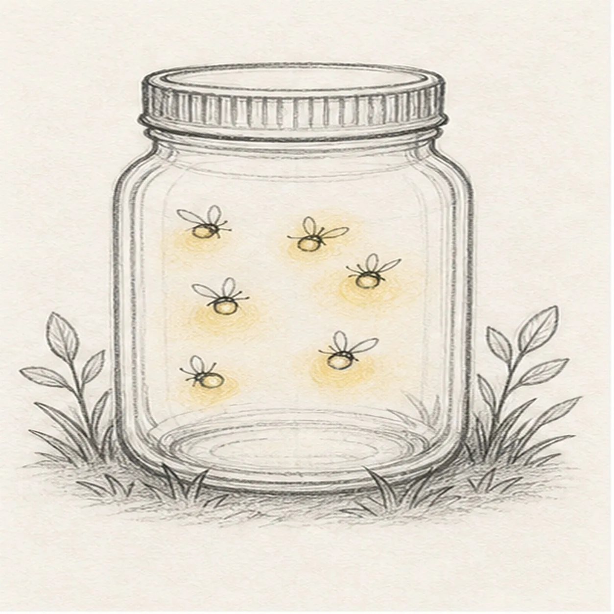

From the archive
Let's draw a mason jar with fireflies
Treat this as one small practice round: build the subject lightly, notice the shapes, then darken only the lines that help the finished sketch.
-
01

Block the jar
Draw a rounded jar body with soft shoulders, straight sides, and a curved base ellipse.
Sketch tip: Use a light center guide if the jar starts leaning. Symmetry helps the glass feel believable.
-
02

Cap the lid
Add a narrow lid band across the top, then sketch short rib marks along the band.
Sketch tip: Keep the ribs simple and vertical. They should suggest a metal lid, not become the whole drawing.
-
03

Show the glass
Draw inner contour lines along the sides and add a curved base line inside the jar.
Sketch tip: Make the inside lines lighter than the outside edge. That keeps the glass transparent.
-
04

Place the fireflies
Add several tiny fireflies inside the jar with small bodies, little wings, and dot-like glow centers.
Sketch tip: Vary their heights so the jar feels lively. Leave enough space around each bug for the glow.
-
05

Add grass and glow
Sketch grass and leaf sprigs around the base, then add soft yellow halos around the fireflies.
Sketch tip: Use yellow gently. A pale glow works better than filling the whole jar with color.
-
06
Finish the firefly jar
Darken the keeper contours, clarify the lid ribs and glass lines, and deepen the existing firefly glow and grass texture.
Sketch tip: Let some construction softness remain. A firefly jar feels best when the light is a little loose.